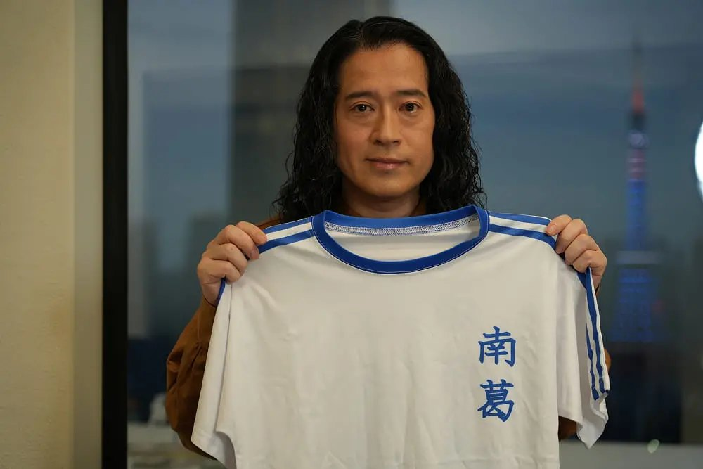
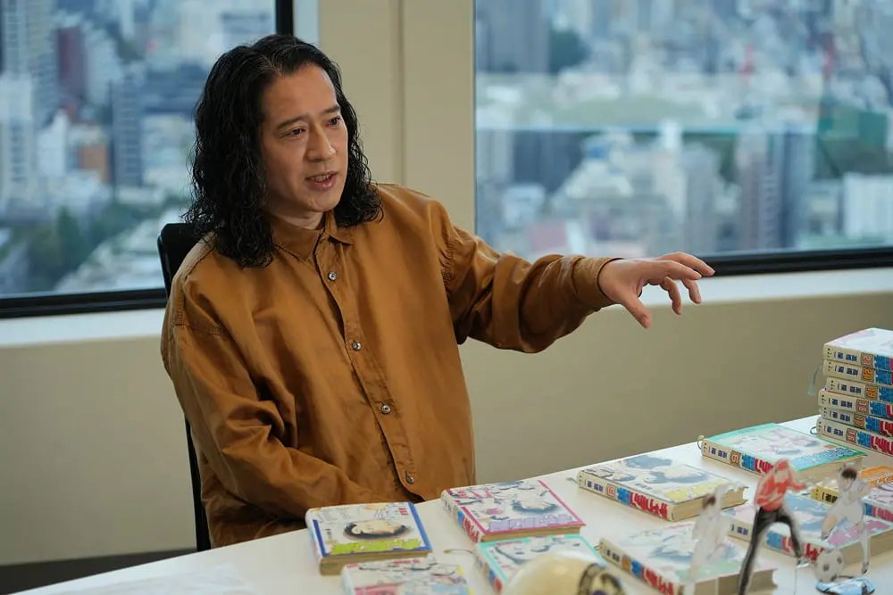
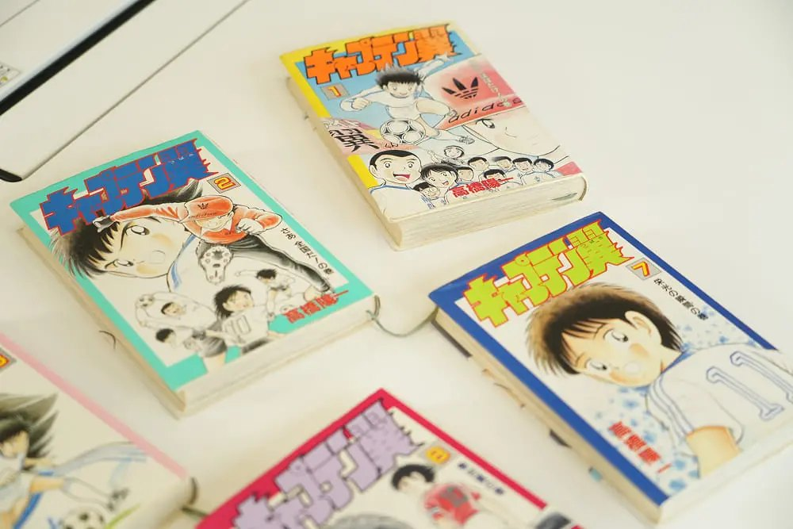
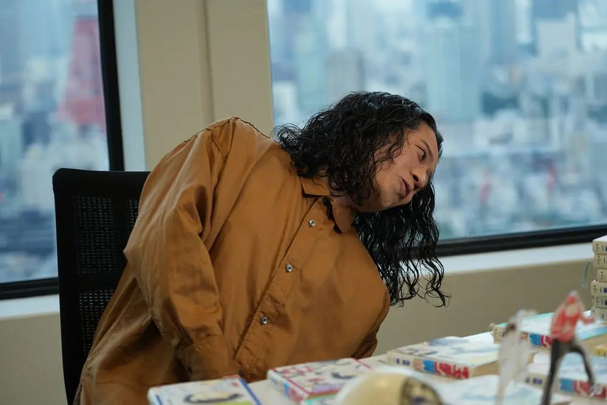
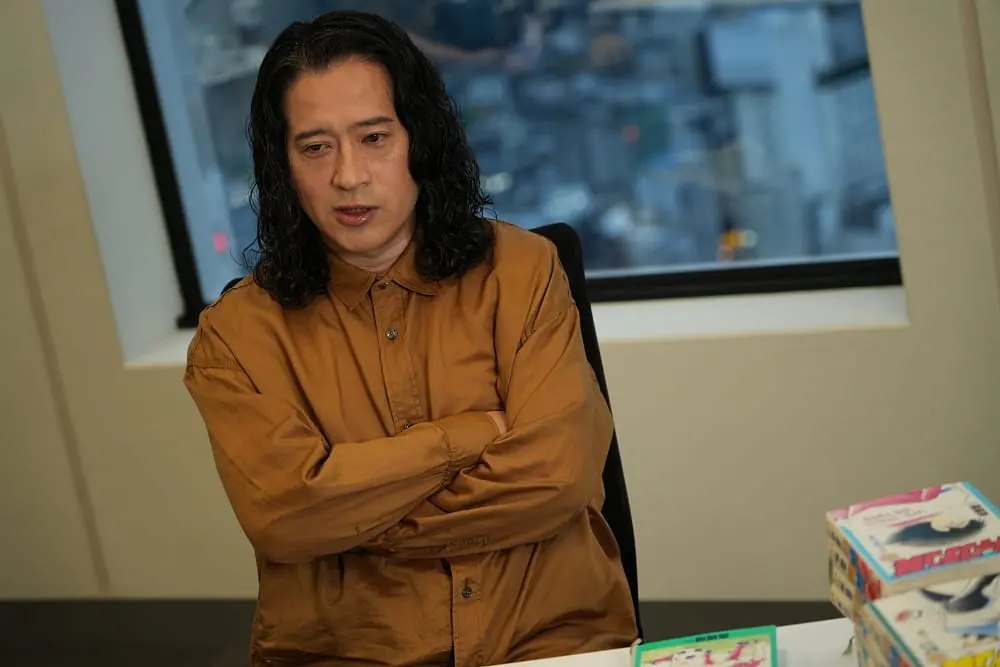
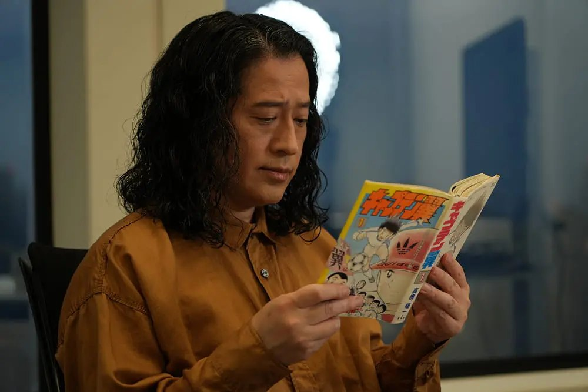

又吉直树 搞笑艺人・作家
1980 年生于大阪府寝屋川市。吉本兴业旗下搞笑艺人、作家。2003 年组成搞笑组合「Peace」，担任装傻担当。2015 年以《火花》获芥川奖，该书累计发行超过 350 万册。其他著作有《剧场》《人间》等。
最初接触《队长小翼》是什么时候，是怎样的相遇方式？
大概小学一年级或二年级。最初是附近一家像汉堡店的地方放着单行本，读到它就算相遇了。之后自己也想要，就开始买。那时我还没踢足球，从小学三年级开始踢，从此更加着迷。作为漫画喜欢上它，和自己真正开始踢足球这两件事重叠在一起，让《队长小翼》变成了更特别的存在。
对童年的又吉先生来说，《队长小翼》是怎样的作品？
真的是很特别的作品。可以说是完全融入了生活，《队长小翼》的哲学之类的东西，直接就成了我踢球的方式。比如罗伯特·本乡和翼说的「球是朋友」这种感觉，我也原样相信着。
拿到足球时我甚至会抱着它钻被窝，去哪里都带着球。这种一直让球在脚边的感觉，肯定是受翼的影响。如果没有《队长小翼》，我和球的距离感大概会完全不同吧。
有特别印象深刻的比赛或场面吗？
有很多，但印象最深的是对西德那场。那场比赛记得非常清楚。
还有，作品的影响真的渗进了日常——我在大阪踢球的时候，大家把大力射门很自然地叫作「Fire」。比赛中认真的指示也会喊「Fire」，大家就是这样把《队长小翼》吸收了进来。
有和朋友聊《队长小翼》聊得很起劲的回忆吗？
有的。我们常聊「自己在《队长小翼》里是谁」这类话题。
把自己这 45 年和《队长小翼》重叠起来回望，会有什么感受？
感觉很不可思议。我小时候日本还没进过世界杯，所以和世界交手这件事本身还很遥远。但在《队长小翼》里，日本已经在和世界各国的球队比赛，有那种狂热。
如果不是有人先有这样的想象，大概也不会有今天日本足球的发展。当时还有「日本足球很弱」「在世界舞台上不可能」这样的气氛，而它先画出了「能够战斗的样子」。这个影响非常大。
这也和自己的人生相通。当艺人、写书、发表什么东西，对这些事我不再觉得「反正做不到」。当然会考虑最坏的情况，但还是要去赢，带着积极的想象去准备——这种感觉是《队长小翼》给我的。

小时候读和长大后的现在，看法有变化吗？
有变化。小时候会把全部都当真地接受，长大后看到角球时球员站在球门横梁上之类的场面，就能一边读一边想「这是幻想啊」。但这反过来很有趣——明明是写实的足球漫画，却有跨越那一层的趣味。
若岛津的三角跳也是，若林和若岛津这样两个不得了的门将同时存在也很好。尤其是把门将画得很帅这一点很厉害。当时的日本，门将应该还不像现在这样是风光的位置，所以我觉得这也是《队长小翼》的厉害之处。
连载 45 年的作品才有的特别之处，在哪里？
还是每个角色都有自己的粉丝这一点。不只是翼，其他角色各自都有魅力。

特别喜欢、被吸引的必杀技是什么？
翼和岬的二过一我还是非常喜欢。必杀技的话，日向的老虎射门、松山的老鹰射门也很有印象。
不过我也喜欢石崎的脸挡球。其实我自己也做过类似的事——初中二年级以边后卫出场的一场比赛，被对手过掉、对方正要传中的瞬间，我用脸挡了上去。我当时想，如果自己也有可能做到的话，大概就是脸挡球了。

在《队长小翼》的登场人物里，有觉得和自己重叠的人物吗？
完全就是这个人，倒是没有。但就一直在碰球的时间来说，有接近翼的地方；饥饿精神之类的东西，可能接近日向。
我家不太富裕，开始踢球时也没有自己的球，是借学校体育仓库的球来练的。大家穿钉鞋的时候，我有一段时期还穿着普通运动鞋，那种环境里踢球的感觉，我觉得和日向身上有的东西有点接近。
不过说到踢球风格，果然还是石崎。所以也许是：心态是日向，碰球的时间是翼，风格是石崎。
有从《队长小翼》受影响的想法，或与创作活动相连的部分吗？
有的。一个是对手要画得有魅力。《队长小翼》里的对手和敌队真的又强又有魅力，会让人想「这能赢吗」。不是那种为了输得顺理成章而存在的对手。所以故事才有意思，胜负才有意义。我自己写小说时，能不能把和主人公想法不同的人物也写得足够强，我认为非常重要。
另一个更大的影响是花时间的重要性。翼一直碰着球。是因为他是天才才一直碰，还是因为一直碰才走到那一步，我不知道，但要想赢过比自己能力强的人，就只能花时间——这个感觉我是从足球学到的。
当了艺人之后，比别人多写段子、要写书就比别人多读、不擅长的部分就去加强，这些做法全都是「足球方法」。而那根源里，果然有《队长小翼》。
对《队长小翼》特色之一的「与伙伴一起获胜」，有共鸣的部分吗？
那本来是极其重要的部分，但说实话，小时候的我没能好好学到。初中时我因为对足球非常认真，对自己很严，也就用同样的标准要求周围的人。所以我在队里相当孤立。有过一段时期觉得「只有我在努力，所以任意球和点球都该我来踢」。
但有一次老师对我说「对自己严可以，但不要用同样的标准要求别人」，我这才第一次意识到：自己的做法错了。然后我向每个人道了歉。
《队长小翼》明明好好画出了大家把心意合而为一去战斗的重要性，我却没有读到那里。正因为如此，后来我才更强烈地感受到它的重要。

对迎来连载 45 周年的《队长小翼》，以及对读者，想说些什么？
首先对作品，是希望它能尽量长久地继续下去。我出生、开始踢球的时候，《队长小翼》已经存在，这真的很重要。正因为现在还在继续，新的读者才会想从头读起；对今后开始踢球的人，它也一定会带来和我当年一样大的影响。所以是感谢。
对读者，我希望不只是喜欢足球的人来读。没踢过足球的人也会觉得有趣，里面也画出了热衷于某件事的人的心情，以及为了赢需要多少准备的严苛。从事创作或表达工作的人，也一定能学到东西。运动员拿出成绩的过程，和创作者把作品推向世间的过程，相似得令人吃惊。
2026 年的现在读《队长小翼》，它的乐趣用一句话概括是？
是「能让人明白足球之趣的漫画」。足球是世界上观看人数最多的运动，而这部作品把足球有趣的部分，以极其浓缩的形式凝练了出来。
所以你会明白，为什么大家都那么迷恋足球。喜欢足球的人当然不用说，就算不是的人也能被传达；连载开始 45 年后的今天读，依然能好好地热血起来——这正是它厉害的地方。

从又吉直树的言语中浮现出来的，是这样一个事实：《队长小翼》并不只是一部令人怀念的名作，而是如今读来依然新鲜、依然让人热血的作品。少年时代，他用身体接受了「球是朋友」这种感觉；此后，在努力的积累方式、面对表达的姿态上，也一直受影响。所以《队长小翼》，对曾经读过的人当然值得重新翻阅；对还没读过的人而言，或许也正是现在该拿起的一部作品。
采访出处：https://45th.captain-tsubasa.world/special/interview-01/